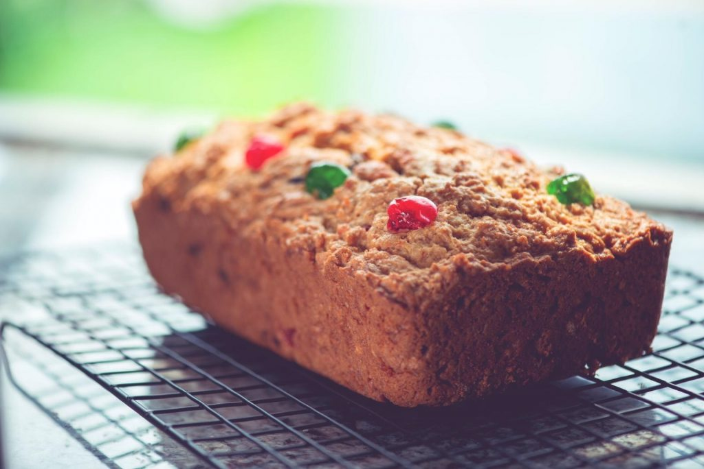

Sweet Bread

Description
Sweet Bread is a traditional pastry found throughout all Barbados.
This 'bread' has multiple variations and manners of preparation, and sometimes is used itself as an ingredient to other Barbadian meals.
In all its variations, it retains its sweet taste and crumbly exterior.
Ingredients
- 3 x 80 g packs prepared coconut
- Alternative: Prepare from a whole coconut
- 40 g light brown sugar
- 1½ tsp ground mixed spice
- 350 g plain flour
- 2½ tsp baking powder
- ¼ tsp ground nutmeg
- ½ tsp fine sea salt
- 225 g caster sugar
- 100 g glacé cherries; Roughly chopped and rinsed
- 50 g raisins
- 50 g cut mixed peel
- 100 g butter; melted
- 75 ml whole milk
- 1 large egg
- 1 tsp almond extract
Steps
- Mix the coconut, pumpkin, sweet potato, sugar, spices, raisins, flour, corn flour, and salt together in a large bowl.
- Add the beaten egg, melted butter/margarine, and milk.
- Mix thoroughly by hand to combine.
- You should have a thick mixture that drops slowly from a spoon.
- Add more flour if the mixture is not thick enough
- Add a bit more milk if it is too thick.
- Strip leaves from stalk with a sharp knife then briefly singe them over an open flame to make them more pliable.
- Cut the leaves into individual 8" squares.
- Spoon 2 to 3 tablespoons of the mixture into the centre of the banana leaf.
- Fold the leaf around the mixture
- Take care not to rip the leaf.
- Steam the conkies on a rack over boiling water in a large saucepan for 1 hour or until they are firm.
- Unwrap and enjoy!
- Grate the coconut to give you 200 g
- Use either a food processor, or grater for this
- Make the pieces as course or fine as desired.
- Combine the following ingredients to make the filling and set aside
- 50 g of the grated coconut
- light brown sugar
- ½ teaspoon of mixed spice
- 1 tablespoon of water
- Preheat the oven to 160°C, fan 140°C, gas 3 and lightly grease and line a 900g loaf tin (10 x 20cm base measurement).
- Sift, where applicable, into a large bowl
- Flour
- Baking Powder
- Nutmeg
- Remaining Mixed Spice
- Salt
- Stir the following into the large bowl
- 225 g caster sugar
- chopped cherries
- raisins
- Mixed peel
- Remaining 150 g grated coconut
- Whisk the following in a separate bowl
- Butter
- Milk
- Egg
- Almond extract
- Add whisked ingredients to dry ingredients
- Stir together until you have a very stiff dough
- Press half the dough into the tin
- Add the coconut filling down the centre, leaving a 5mm space at each end
- Press the remaining dough on top, covering the filling completely
- Top with the whole cherries
- Bake for about 1 hour 10 minutes or until the bread is deeply golden
- Dissolve the extra caster sugar in 1 tablespoon of just-boiled water.
- Brush over the bread with dissolved sugar then return it to the oven for 5 minutes
- Leave to cool in its tin, then turn out and slice to serve.